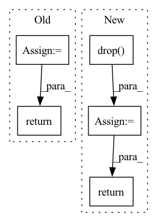

Pattern ID :16800

Before Change
key_flat = key.view(batch, key.shape[1], -1).transpose(1, 2)
query = reshape(self.query(query_flat))
key = reshape(self.key(key_flat)).transpose(2, 3)
value = reshape(self.value(key_flat))
attn = torch.matmul(query, key) / sqrt(self.dim_head)
mask, start_mask = causal_mask(height * width)
mask = mask.type_as(query)
start_mask = start_mask.type_as(query)
attn = attn.masked_fill(mask == 0, -1e4)
attn = torch.softmax(attn, 3) * start_mask
attn = self.dropout(attn)
out = attn @ value
out = out.transpose(1, 2).reshape(
batch, height, width, self.dim_head * self.n_head
)
out = out.permute(0, 3, 1, 2)
return out
class PixelBlock(HelperModule):
def build(
After Change
attn = attn.masked_fill(mask == 0, -1e4)
attn = torch.softmax(attn, dim=3) * start_mask
attn = self.drop(attn)
y = (attn @ v).reshape(batch_size, height, width, self.head_dim*self.nb_heads).permute(0, 3, 1, 2)
return y
class PixelBlock(nn.Module):
def __init__(self, in_channel, channel, kernel_size, nb_res_blocks, dropout=0.1, condition_dim=0):
In pattern: SUPERPATTERN
Frequency: 4
Non-data size: 5
Instances
Fragment ID: 56140520
Project Name: vvvm23/vqvae-2
Commit Name: e15b9e3d7c13f912682873648e5aaaf81b1dfec5
Time: 2021-06-02
Author: alexander.f.mckinney@durham.ac.uk
File Name: pixelsnail.py
M Class Name: CausalAttention
N Class Name: CausalAttention
M Method Name: forward(3)
N Method Name: forward(3)
M Parent Class: HelperModule
N Parent Class: HelperModule
M File Name: pixelsnail.py
N File Name: pixelsnail.py
M Start Line: 184
M End Line: 204
N Start Line: 110
N End Line: 130
'>
Before Change
df_aux = check_single_dataframe(df_i, check_y, covariates, regressors, events).copy(deep=True)
df_aux["ID"] = df_name
checked_df = pd.concat((checked_df, df_aux), ignore_index=True)
return checked_df
def _crossvalidation_split_df(df, n_lags, n_forecasts, k, fold_pct, fold_overlap_pct=0.0):
After Change
df_aux["ID"] = df_name
checked_df = pd.concat((checked_df, df_aux), ignore_index=True)
if len(regressors_to_remove) > 0:
regressors_to_remove = list(set(regressors_to_remove))
checked_df = checked_df.drop(*regressors_to_remove, axis=1)
return checked_df, regressors_to_remove
def _crossvalidation_split_df(df, n_lags, n_forecasts, k, fold_pct, fold_overlap_pct=0.0):
'>
Fragment ID: 56140511
Project Name: ourownstory/neural_prophet
Commit Name: ef6159201d8a7b1521d034fb839af6311ec6cc14
Time: 2022-11-08
Author: karl.richter@tum.de
File Name: neuralprophet/df_utils.py
M Class Name: AnonimousClass
N Class Name: AnonimousClass
M Method Name: check_dataframe(5)
N Method Name: check_dataframe(5)
M Parent Class:
N Parent Class:
M File Name: neuralprophet/df_utils.py
N File Name: neuralprophet/df_utils.py
M Start Line: 510
M End Line: 514
N Start Line: 517
N End Line: 528
'>
Before Change
position_embeddings = self.pos_emb[:, :t, :]
embed = token_embeddings + position_embeddings
for enc_layer in self.EncoderLayers:
embed = enc_layer(embed)
tkn_prd = self.Token_Prediction(embed)
return tkn_prd
After Change
t = token_embeddings.shape[1]
position_embeddings = self.pos_emb[:t, :]
// position_embeddings = self.pos_emb(x)
embed = self.drop(self.ln(token_embeddings + position_embeddings))
embed = self.blocks(embed)
embed = self.Token_Prediction(embed)
logits = torch.matmul(embed, self.tok_emb.weight.T) + self.bias
return logits
'>
Fragment ID: 56140527
Project Name: dome272/maskgit-pytorch
Commit Name: 5042389656c05da20be7632a6169a7567a65891a
Time: 2022-04-22
Author: 61938694+dome272@users.noreply.github.com
File Name: bidirectional_transformer.py
M Class Name: BidirectionalTransformer
N Class Name: BidirectionalTransformer
M Method Name: forward(2)
N Method Name: forward(2)
M Parent Class: nn.Module
N Parent Class: nn.Module
M File Name: bidirectional_transformer.py
N File Name: bidirectional_transformer.py
M Start Line: 88
M End Line: 95
N Start Line: 126
N End Line: 135
'>
Before Change
temporal_y = temporal[:, temporal_cols.get_loc("y"), :]
temporal_mask = temporal[:, temporal_cols.get_loc("available_mask"), :]
y_means = torch.sum(temporal_y * temporal_mask, dim=-1, keepdim=True) / torch.sum(temporal_mask, dim=-1, keepdim=True)
y_stds = torch.sqrt(torch.sum(temporal_mask*(temporal_y-y_means)**2, dim=-1, keepdim=True)/ \
torch.sum(temporal_mask, dim=-1, keepdim=True) )
temporal_y = (temporal_y - y_means) / y_stds
temporal[:, temporal_cols.get_loc("y"), :] = temporal_y
return batch, y_means, y_stds
def _inv_normalization(self, y_hat, y_means, y_stds):
return y_stds[:, None]*y_hat + y_means[:, None]
After Change
temporal_cols = batch["temporal_cols"].copy()
// Separate data and mask
temporal_data_cols = temporal_cols.drop("available_mask").tolist()
temporal_data = temporal[:, temporal_cols.get_indexer(temporal_data_cols), :]
temporal_mask = temporal[:, temporal_cols.get_loc("available_mask"), :].clone()
// Remove validation and test set to prevent leakeage
if self.val_size + self.test_size > 0:
cutoff = self.val_size + self.test_size
temporal_mask[:, -cutoff:] = 0
// Normalize. self.scaler stores the shift and scale for inverse transform
temporal_mask = temporal_mask.unsqueeze(1) // Add channel dimension for scaler.transform.
temporal_data = self.scaler.transform(x=temporal_data, mask=temporal_mask)
// Replace values in windows dict
temporal[:, temporal_cols.get_indexer(temporal_data_cols), :] = temporal_data
batch["temporal"] = temporal
return batch
def _inv_normalization(self, y_hat, temporal_cols):
// Receives window predictions [B, W, H]
'>
Fragment ID: 56140514
Project Name: nixtla/neuralforecast
Commit Name: 73dab945c58726e3f150b851bb94e3a003a590a0
Time: 2022-11-02
Author: mergenthaler.m@gmail.com
File Name: neuralforecast/common/_base_recurrent.py
M Class Name: BaseRecurrent
N Class Name: BaseRecurrent
M Method Name: _normalization(2)
N Method Name: _normalization(2)
M Parent Class: pl.LightningModule
N Parent Class: pl.LightningModule
M File Name: neuralforecast/common/_base_recurrent.py
N File Name: neuralforecast/common/_base_recurrent.py
M Start Line: 106
M End Line: 124
N Start Line: 104
N End Line: 125